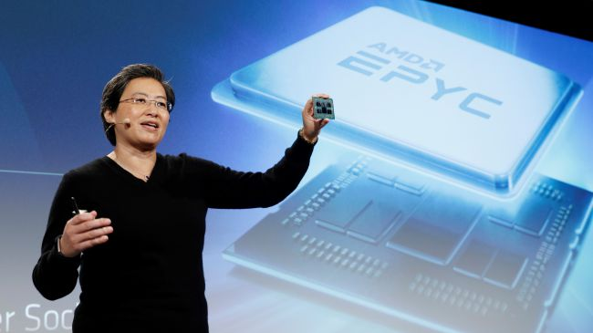

AMD Zen 2 specs, price and release date: all about AMD's newest processor tech
Posted by Lyubomir on June 18
Over the last couple years, AMD has been coming out with some of the best processors (CPUs) on the market, and it doesn’t look like it plans to slow down any time soon. Back at CES 2019, AMD announced its Zen 2 architecture, trimming the manufacturing process down to 7 nanometers (nm), and promising greater performance and efficiency.

Intel reportedly delaying massive new chip plant in Israel
Posted by Peter on June 18
US tech giant Intel Corp. is delaying the setting up of its new semiconductor plant in Israel and has met with contractors to inform them about the delay, Calcalist reported Monday, citing contractors who had been in the meeting.

Nvidia 'Super' RTX cards may launch in July to keep high-end lead on AMD
Posted by Peter on June 18
AMD Navi has been getting all of the headlines recently, but it looks like that's coming to an end. Word on the street is that those Nvidia 'Super' graphics cards may be announced as early as June 21.